Luminous fait jouer la musique déjà sur votre ordinateur. Pas besoin de bibliothèque pour commencer.
Écouter tout de suite
•
Sous Écouter de la musique, choisissez Ouvrir des fichiers ou Lire un dossier.
•
Ou glissez des fichiers et des dossiers sur la fenêtre.
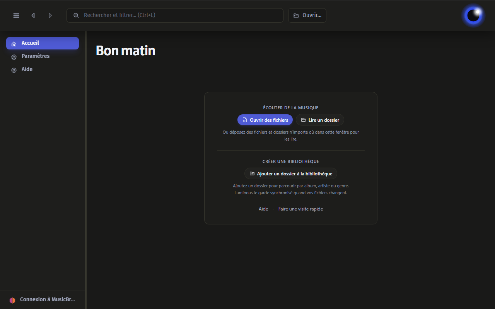
Créer une bibliothèque
1
Choisissez Ajouter un dossier à la bibliothèque sous Créer une bibliothèque, ou ajoutez un dossier dans Paramètres → Sources.
2
Luminous l'analyse, puis le surveille. Les fichiers ajoutés, déplacés ou renommés se mettent à jour d'eux-mêmes.
3
Parcourez votre musique sous Collection dans la barre latérale.
Accueil
•
L'Accueil donne un aperçu de votre bibliothèque et de vos écoutes.
•
Palmarès des albums classe les albums selon les minutes écoutées cette semaine. La pastille Retour signale un album qui revient au palmarès.
•
Choisissez le premier jour de la semaine avec Commencer la semaine le, dans Paramètres → Général.
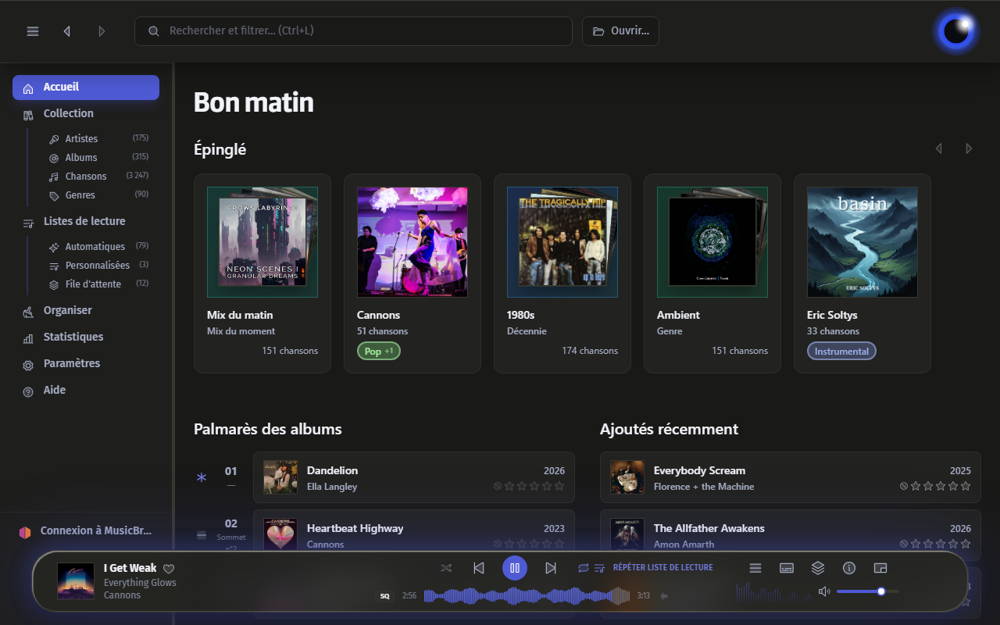
Faire la visite
•
Nouveau sur Luminous? Une courte visite guidée présente l'interface.
•
Revoyez-la en tout temps avec Relancer la visite guidée dans Aide.
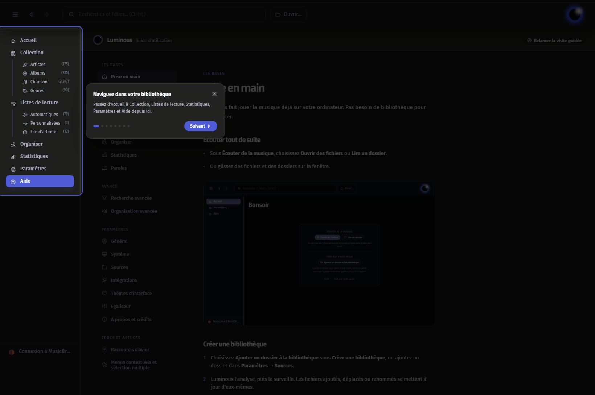
Les bases
Votre collection
Collection, dans la barre latérale, offre quatre vues : Artistes, Albums, Chansons et Genres. Chacune affiche un compte et un menu de tri en haut à droite.
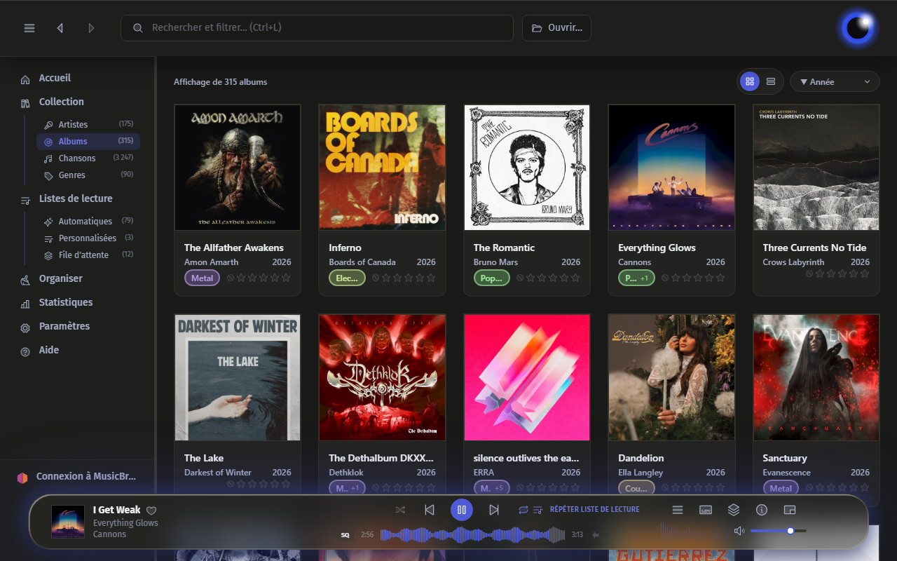
Chansons
•
Voyez toute votre bibliothèque dans un tableau triable.
•
Cliquez avec le bouton droit sur l'en-tête d'une colonne pour choisir les champs affichés, comme Lectures et Ignorées.
•
Faites glisser le bord droit de l'en-tête d'une colonne pour la redimensionner. Double-cliquez sur le bord pour rétablir sa largeur.
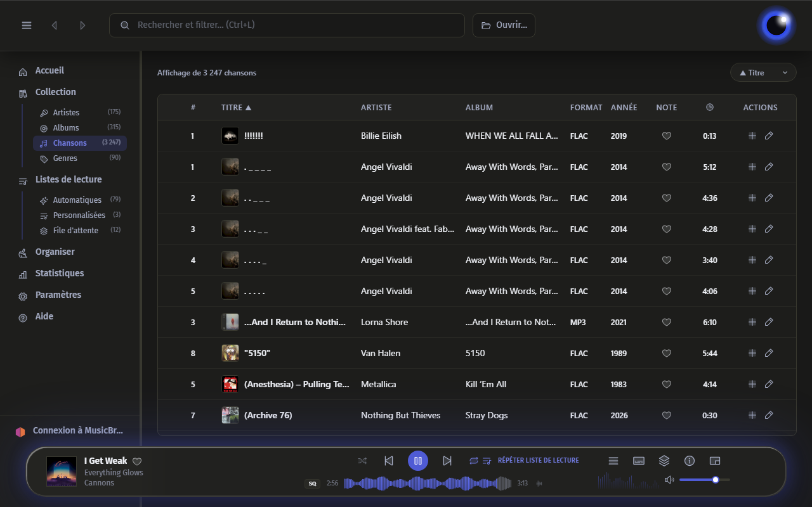
Genres
•
Chaque genre est une carte. Son nombre de chansons inclut ses sous-genres.
•
Glissez une puce de sous-genre sur une autre carte pour la déplacer, ou glissez la poignée d'une carte pour faire du genre entier un sous-genre.
•
Cliquez avec le bouton droit sur une puce ou l'en-tête d'une carte pour Renommer, Promouvoir en genre principal ou Supprimer l'étiquette de toutes les chansons.
•
Cliquez sur la pastille de couleur d'une carte pour changer sa couleur.
•
Cliquez sur une carte ou une puce pour ouvrir sa liste de lecture automatique.
•
Les étiquettes ajoutées sur les pages d'artistes ont leurs propres cartes sous Étiquettes d'artiste, au-dessus des genres des chansons.
•
En haut à droite, alternez entre la vue en cartes et la vue en lignes, et triez par nom ou par nombre de chansons.
•
Les chansons sans genre sont regroupées sous Sans genre.
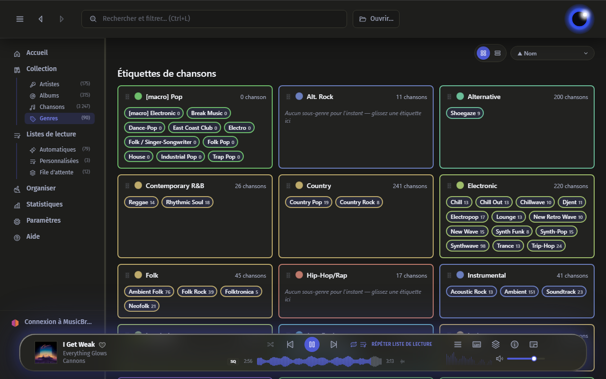
Albums
•
Ouvrez un album pour voir ses pistes. Le panneau latéral indique le format, le débit, la fréquence d'échantillonnage et le volume du fichier en cours.
•
Cliquez sur + pour ajouter l'album ou une chanson à la liste de lecture active (la file d'attente, sauf si vous en choisissez une autre).
•
Cliquez sur le crayon pour ouvrir Modifier les étiquettes de l'album et corriger le titre, l'artiste, le genre ou l'année de toutes les pistes d'un coup.
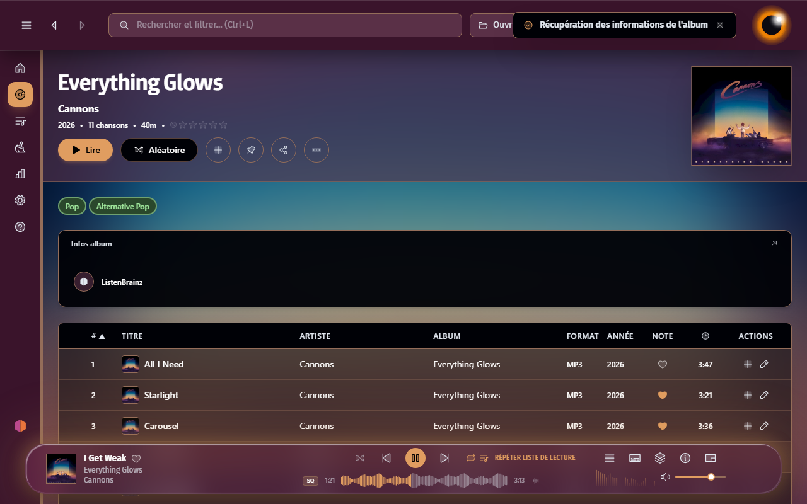
Modifier les étiquettes
•
Cliquez sur le crayon d'une piste pour ouvrir Modifier les étiquettes de la chanson.
•
Artiste, Artiste de l'album, Compositeur et Genre acceptent plusieurs valeurs. Appuyez sur Entrée après chacune.
•
Effacer la pochette retire la pochette intégrée à la piste.
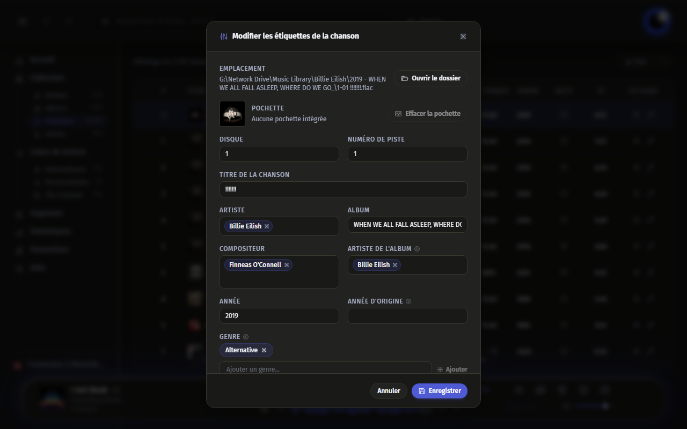
Artistes
•
La page d'un artiste présente ses parutions sous Discographie : albums, EP et simples, puis les listes de lecture où il figure.
•
Cliquez sur Modifier pour ajouter une biographie, un site Web et des liens comme Bandcamp, Spotify ou Instagram. Ils s'affichent dans le panneau À propos de l'artiste.
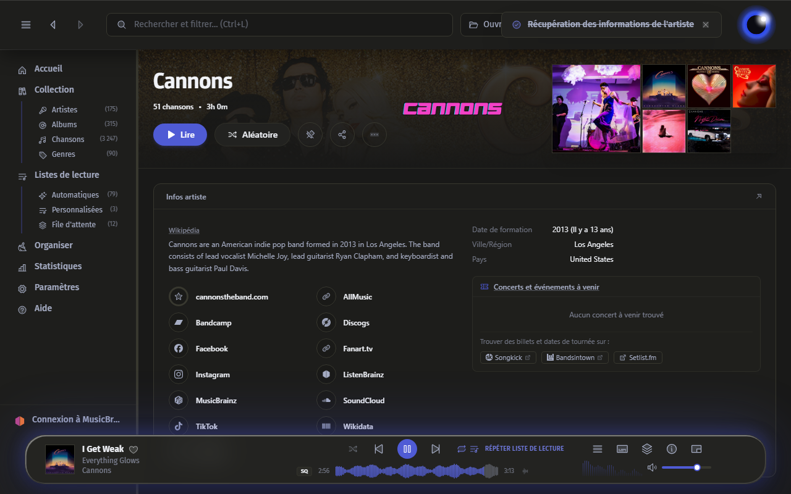
Les bases
Recherche et navigation
Une seule barre de recherche trouve les chansons, les albums, les artistes et les listes de lecture.
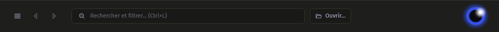
1
Appuyez sur CtrlL ou cliquez sur la barre de recherche.
2
Commencez à taper. Les résultats s'affichent au fur et à mesure.
3
Utilisez les flèches de retour et d'avance, à côté de la barre, pour revenir sur vos pas.
•
Cliquez sur Ouvrir… (CtrlO) pour faire jouer des fichiers de n'importe où sur votre ordinateur.
•
Cliquez sur le logo Luminous pour activer ou désactiver sa pulsation au rythme de la musique.
La barre de lecture se trouve au bas de la fenêtre pendant que la musique joue.
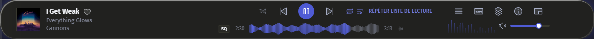
Barre de lecture
•
Cliquez sur la pochette pour passer au mode immersif (Ctrl2).
•
Cliquez sur le cœur ou les étoiles pour noter la chanson. Choisissez le style dans Paramètres → Général.
•
Cliquez sur la forme d'onde pour vous déplacer dans la chanson. , à côté, affiche plutôt les bandes de fréquences : bleu pour les graves, ambre pour les médiums, blanc pour les aigus.
•
Lecture aléatoire passe par Désactivé, Tout et :
– Dans l'album : albums dans l'ordre, pistes mélangées dans chacun.
– Albums : albums mélangés, pistes dans l'ordre.
– Artistes : un artiste à la fois, choisi au hasard.
•
Répéter passe par Désactivé, Chanson, Album et Liste de lecture.
•
Les boutons de droite ouvrent :
le menu de la chanson
les paroles
la file d'attente
le panneau d'informations (CtrlI)
le mini-lecteur (CtrlM)
•
Les touches multimédias et les commandes multimédias de votre système fonctionnent même quand Luminous n'est pas au premier plan.
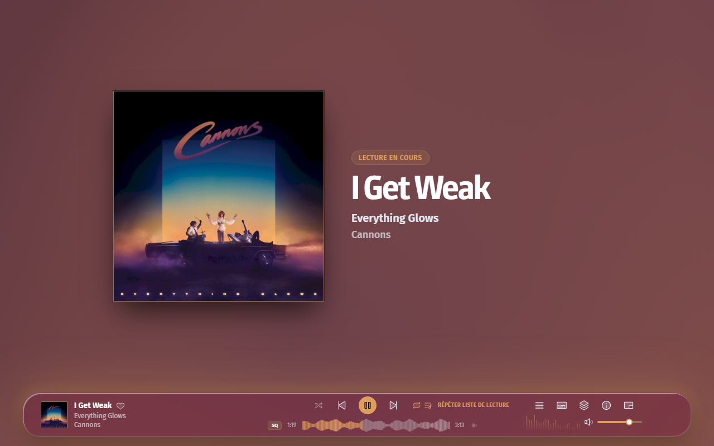
Mini-lecteur
•
Survolez le mini-lecteur pour afficher ses commandes et noter la chanson.
•
Faites-le glisser par le haut pour le déplacer.
•
Utilisez le bouton des paroles pour alterner entre la pochette et les paroles synchronisées.
•
Cliquez sur Restaurer la fenêtre principale (CtrlM), en bas à droite, pour revenir.
Au repos
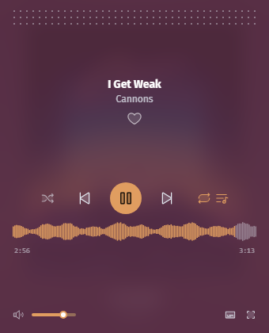
Au survol
Les bases
Listes de lecture
Il existe trois sortes de listes de lecture :
•
Personnalisée : vous la créez en y glissant des chansons.
•
Intelligente : vous définissez des règles, comme « Genre est Rock et Année est après 2015 », et Luminous la tient à jour.
•
Automatique : des listes par genre, décennie et BPM que Luminous crée lui-même, avec jusqu'à 25 chansons renouvelées chaque jour. Chacune apparaît dès que 25 chansons correspondent. Cliquez sur Actualiser la liste de lecture pour une nouvelle sélection.
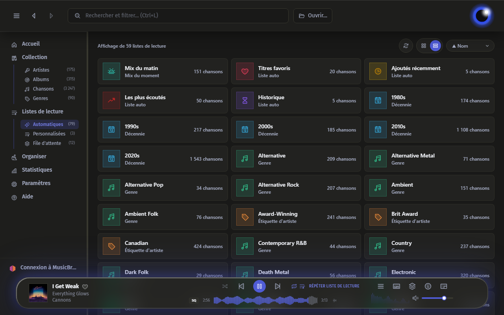
Ajouter des chansons
•
Cliquez sur + à côté d'une chanson ou d'un album pour l'ajouter à la file d'attente.
•
Pour l'ajouter plutôt à une autre liste, cliquez d'abord sur Définir comme active dans celle-ci.
•
Glissez des fichiers ou un dossier sur la fenêtre pour remplacer la file d'attente et lancer la lecture. Maintenez Maj pour les ajouter à la fin.
Listes intelligentes
•
Cliquez sur Nouvelle liste intelligente, ajoutez des règles, puis nommez-la et enregistrez-la.
•
Utilisez Modifier les règles pour les changer plus tard.
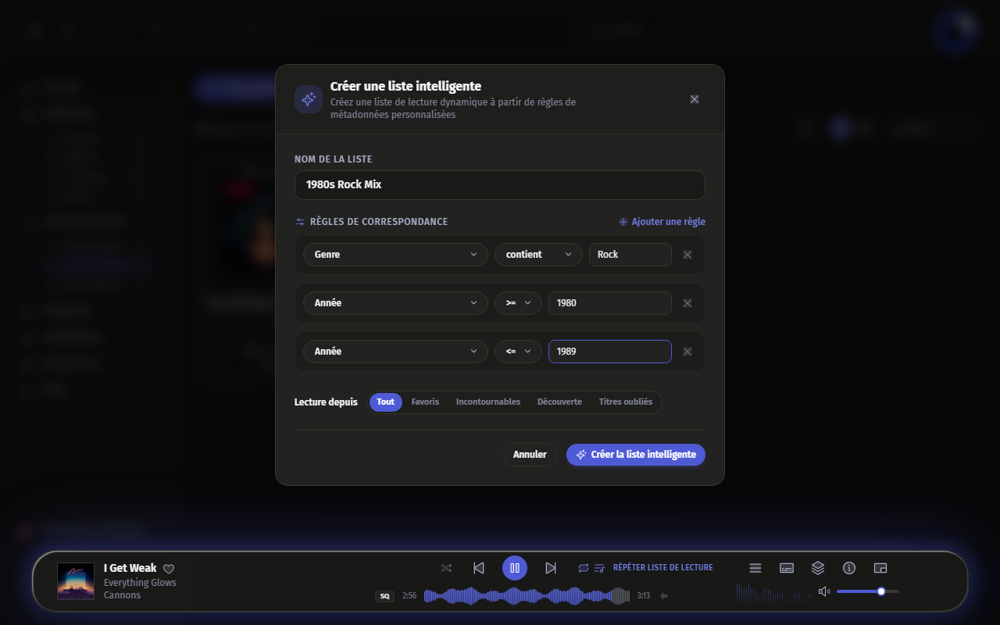
Listes par BPM
Les listes par BPM utilisent l'étiquette BPM de chaque chanson. Luminous ne mesure pas le tempo : les chansons sans étiquette BPM n'y figurent pas. Créez vos propres plages avec une liste intelligente.
Catégorie
Plage BPM
Tempo lent BPM
60–90
Tempo moyen BPM
90–115
Tempo enlevé BPM
115–130
Haute énergie BPM
130–150
Extrême BPM
150+
Gérer une liste
•
Double-cliquez sur le nom pour le modifier.
•
Glissez les rangées pour changer leur ordre. Sélectionnez-en plusieurs pour les déplacer ensemble.
•
Cliquez sur l'en-tête d'une colonne pour trier, ou tapez dans le champ de filtre pour réduire la liste.
•
Utilisez les boutons de retrait pour enlever les doublons ou les chansons indisponibles, et Vider la liste pour tout effacer.
•
Cliquez avec le bouton droit sur l'en-tête d'une colonne pour ajouter la colonne Date d'ajout.
Importer et exporter
•
Importez ou exportez des listes .m3u, .m3u8, .pls et .xspf.
•
À l'exportation, choisissez Utiliser des chemins d'accès relatifs (portables) pour que la liste fonctionne dans un autre dossier ou sur un autre ordinateur.
Les bases
Statistiques
Statistiques présente vos écoutes, calculées sur votre ordinateur et jamais envoyées ailleurs.
•
Choisissez 7 derniers jours, 28 derniers jours ou Dernière année.
•
Voyez vos artistes, albums, chansons et genres les plus écoutés. Cliquez sur un élément pour l'ouvrir.
•
La carte de chaleur montre les minutes d'écoute par jour, avec votre Série en cours et votre Plus longue série.
•
Moment de la journée montre quand vous écoutez le plus.
•
Pour exclure un élément, cliquez dessus avec le bouton droit et choisissez Ne pas inclure dans les statistiques.
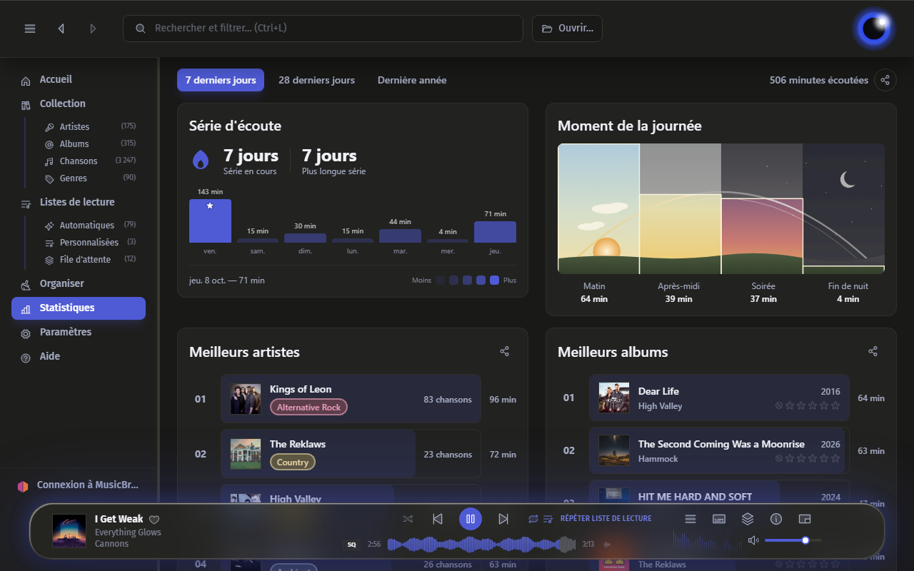
Les bases
Paroles
Activez Paroles dans la barre de lecture. La ligne en cours s'illumine au rythme de la musique.
•
Cliquez sur une ligne pour y sauter.
•
Récupérer à nouveau relance la recherche des paroles.
•
Modifier permet de corriger le texte ou la synchronisation.
•
Les paroles sans horodatage s'affichent en texte brut.
•
Pour une pièce instrumentale, choisissez Marquer comme instrumental pour que Luminous cesse de chercher.
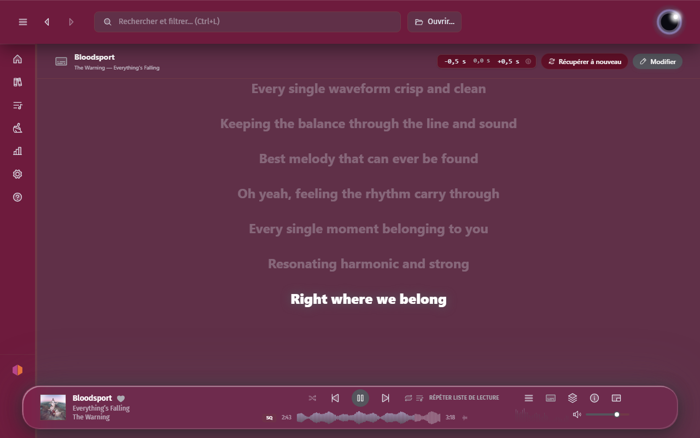
Avancé
Recherche avancée
Tapez des termes field:value dans la barre de recherche pour filtrer toute votre bibliothèque. Par exemple, genre:rock rating:>=4 trouve les chansons rock notées 4 étoiles ou plus.
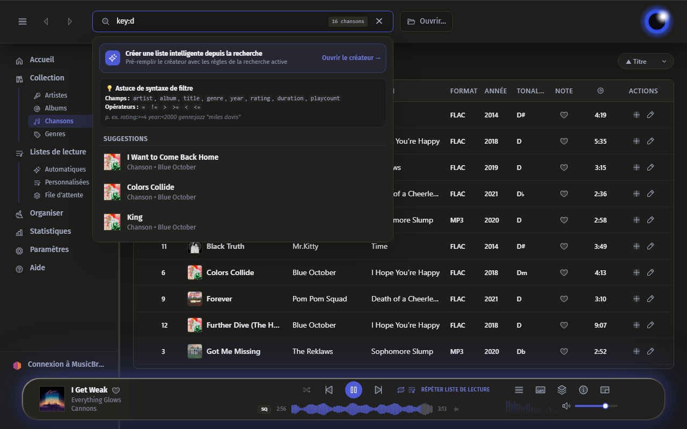
Syntaxe
•
Un champ texte sans opérateur signifie contient : genre:rock trouve tout genre contenant « rock ».
•
Un champ numérique sans opérateur signifie exactement : year:1994 ne trouve que 1994.
•
Tous les termes doivent correspondre : rating:>=4 year:<2000 genre:rock.
•
Les mots sans deux-points cherchent dans le titre, l'artiste et l'album : rating:>=4 "tom cochrane".
•
Mettez entre guillemets les valeurs avec des espaces : artist:"tom cochrane". Les noms de champs ignorent la casse.
Opérateurs
Symbole
Signification
=
égal à
!=
différent de
>
supérieur à
>=
supérieur ou égal
<
inférieur à
<=
inférieur ou égal
(aucun)
contient (texte) / égal à (numérique)
Champs
Chaque champ fonctionne dans la barre de recherche et comme règle de liste intelligente.
Champ (alias)
Type
Correspond à
artist
texte
Artiste (repli sur Artiste de l'album)
artist_tag
texte
Étiquette Artiste
album_artist
texte
Artiste de l'album seulement
album
texte
Titre de l'album
title
texte
Titre de la piste
genre
texte
Genre
composer
texte
Compositeur
key / initial_key
texte
Tonalité (ex. « D », « Am », « D♭ »)
bpm
nombre
Battements par minute
year
nombre
Année de sortie
originalyear / original_year
nombre
Année de sortie originale (vs. réédition)
rating / stars
nombre
Note en étoiles, 0–5
playcount / plays
nombre
Nombre d'écoutes
skipcount / skips
nombre
Nombre de sauts
lastplayed / last_played
nombre
Horodatage de dernière écoute (secondes Unix)
added
nombre
Horodatage d'ajout (secondes Unix)
track / track_number
nombre
Numéro de piste
disc / disc_number
nombre
Numéro de disque
bitrate
nombre
Débit binaire (kbps)
samplerate / sample_rate
nombre
Fréquence d'échantillonnage (Hz)
bitdepth / bit_depth
nombre
Profondeur de bits
channels
nombre
Nombre de canaux
compilation
0/1
Indicateur de compilation
duration / length
durée
Longueur de la piste — voir ci-dessous
duration accepte des secondes (duration:>180), MM:SS (duration:>3:30) ou H:MM:SS (duration:<1:02:03).
Enregistrer une recherche comme liste intelligente
Dès que votre recherche contient un terme field:value, cliquez sur Ouvrir le créateur → dans le menu. Chaque terme devient une règle; ajoutez-en d'autres, nommez la liste et enregistrez-la.
Exemples
Objectif
Requête
Chansons rock notées 4+ étoiles d'avant 2000
rating:>=4 year:<2000 genre:rock
Chansons en tonalité de D
key:d
Pistes rapides (120–130 BPM)
bpm:>=120 bpm:<=130
Mélange texte libre + champ
rating:>=4 "tom cochrane"
Albums compilation seulement
compilation:1
Pistes de plus de 3:30
duration:>3:30
Avancé
Organisation avancée
Écrivez votre propre modèle en choisissant Personnalisé dans la page Organiser.
Variables du modèle
Combinez-les avec votre propre texte. Placez un élément entre { } pour l'omettre quand la piste n'a pas de valeur; terminez-le par / à l'intérieur des accolades pour en faire un dossier.
Variable
Remplie par
%albumartist
L'artiste principal de l'album
%artist
L'artiste de la piste
%album
Titre de l'album
%disc
Numéro de disque
%track
Numéro de piste
%title
Titre de la piste
%year
Année de sortie
%genre
Genre
%track3
Numéro de piste, complété à trois chiffres
%rawtrack
Numéro de piste tel qu'enregistré dans l'étiquette, sans complément
Exemples
%disc-%track
2-07
Disc %disc
Disc 2
%year - %album
2019 - Reservoir
{%album/}
Ajoute un dossier au nom de l'album, seulement si la piste en a un
{%disc-}%track
Omet le « 1- » quand il n'y a pas de numéro de disque : 07, ou 1-07
{%track }%title
Ajoute « 07 » avant le titre, seulement s'il y a un numéro de piste
{%track-}%title
Ajoute « 07- » avant le titre, seulement s'il y a un numéro de piste
Paramètres
Général
•
Langue / Language : la langue des menus, des boutons, des messages et de ce guide.
•
Commencer la semaine le : dimanche ou lundi, pour les palmarès et statistiques de la semaine.
•
Style de notation des morceaux : un cœur, 5 étoiles ou les deux.
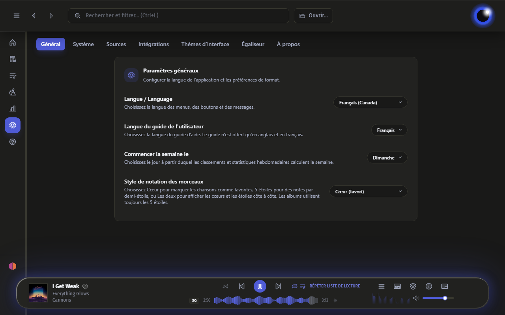
Paramètres
Système
•
Faire de Luminous le lecteur de musique par défaut (Windows) : ouvrir les Applications par défaut de Windows pour choisir les types de fichiers que Luminous ouvre.
•
Réduire dans la zone de notification : fermer la fenêtre masque Luminous dans la zone de notification. Cliquez avec le bouton droit sur son icône pour Lecture/Pause, Chanson suivante et Chanson précédente.
•
Lancer au démarrage : ouvrir Luminous à l'ouverture de session.
•
Exporter les diagnostics : enregistrer un fichier journal des plantages et erreurs récents à joindre à un rapport de bogue.
•
Emplacement des données : où se trouvent la base de données de la bibliothèque, le cache des pochettes et les préférences. La version ZIP pour Windows fonctionne en Mode portable et garde tout dans un dossier data à côté de l'application. Les dossiers de musique situés sur la même unité suivent l'application lorsque cette unité reçoit une nouvelle lettre sur un autre ordinateur. Sous Linux, placez un fichier vide nommé portable à côté de l'AppImage pour faire de même.
•
Mises à jour : vérifiez si une nouvelle version existe et choisissez quoi faire quand il y en a une. Les installations du Microsoft Store se mettent à jour d'elles-mêmes.
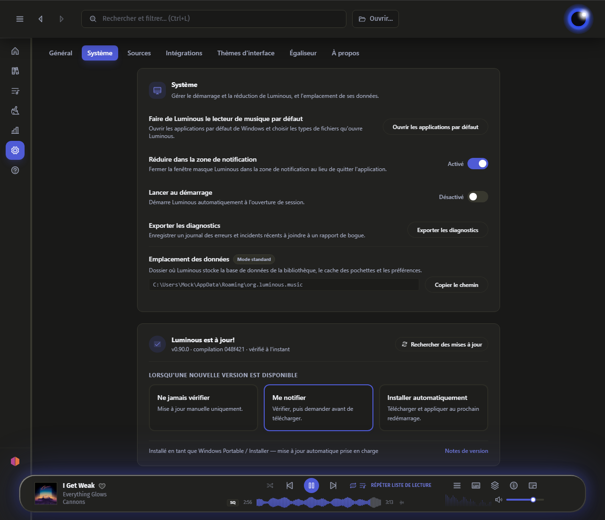
Paramètres
Sources
Dossiers
•
Cliquez sur Ajouter un dossier pour ajouter un dossier de musique. Les fichiers ajoutés ou modifiés apparaissent d'eux-mêmes.
•
Désactivez Surveillance en temps réel des dossiers pour ne vérifier les changements que lors d'une réanalyse.
•
Analyser la bibliothèque au démarrage vérifie vos dossiers à chaque ouverture de Luminous.
•
Réanalyser la bibliothèque cherche les changements; Forcer la réanalyse complète relit tout.
•
Enregistrer les illustrations dans les dossiers de musique enregistre les pochettes en cover.jpg dans les dossiers d'albums et les photos d'artistes en artist.jpg. Les illustrations déjà présentes ne sont jamais écrasées.
•
Si un dossier est indisponible parce que sa lettre d'unité a changé ou que vous avez déplacé la musique, cliquez sur Localiser… et choisissez son nouvel emplacement. Les morceaux conservent leurs écoutes, leurs notes et leurs listes de lecture.
•
Pour déplacer un dossier encore disponible, cliquez sur Modifier les détails du dossier, puis sur Changer d'emplacement….
Musique à distance
•
WebDAV distant : écoutez en continu depuis Nextcloud, ownCloud, Synology et d'autres serveurs WebDAV.
•
Serveurs multimédias : connectez un serveur OpenSubsonic comme Navidrome, Gonic ou LMS. Luminous synchronise sa bibliothèque et peut lui transmettre vos écoutes.
•
La musique à distance est en lecture seule : vos modifications d'étiquettes et de pochettes restent dans Luminous.
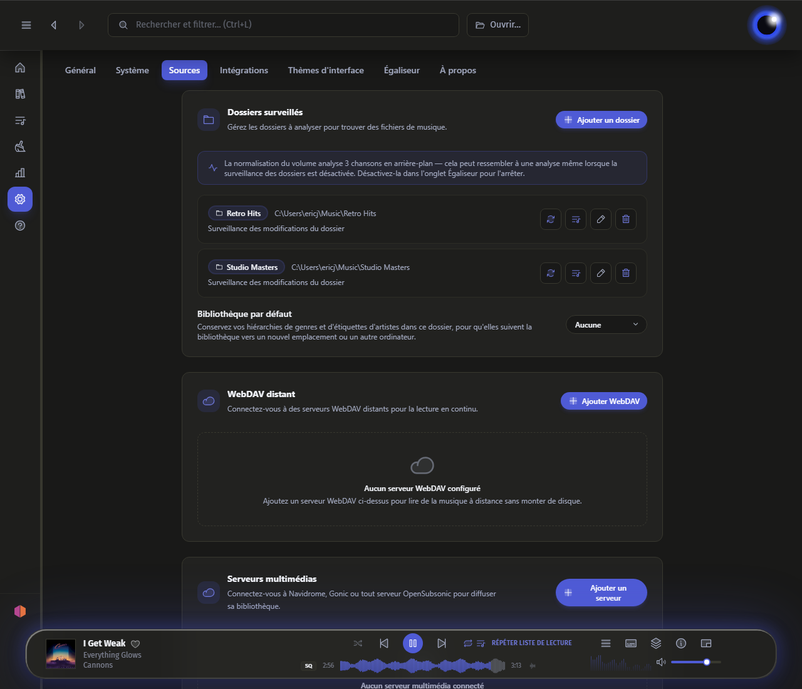
Paramètres
Intégrations
Chaque intégration est facultative. Désactivez-en une pour garder cette partie de Luminous hors ligne.
•
Services en ligne : l’interrupteur général, en haut à droite. Passez-le à Hors ligne et Luminous n’envoie plus aucune requête à des services externes (pochettes, paroles, biographies, ListenBrainz, connexion MusicBrainz, présence Discord et vérification des mises à jour); les paroles et pochettes enregistrées s’affichent toujours, et vos bibliothèques Subsonic et WebDAV continuent de fonctionner.
•
Scrobbler ListenBrainz : collez votre Jeton utilisateur, cliquez sur Valider et enregistrer, puis activez le scrobbling. Choisissez aussi d'envoyer ou non vos notes. Basculez la diffusion en cours d'écoute et mettez en pause le scrobbling depuis la fenêtre de profil MusicBrainz dans la barre latérale.
•
Mettre en pause le scrobbling (dans la fenêtre de profil de la barre latérale ou la zone de notification) cesse l'envoi sans déconnecter votre compte. Les écoutes faites hors ligne attendent que vous cliquiez sur Synchroniser.
•
MusicBrainz Picard : Luminous trouve Picard ou vous laisse le chercher, pour ouvrir vos fichiers dans Picard.
•
Discord Rich Presence : affichez ce que vous écoutez sur Discord. L'application de bureau Discord doit être ouverte.
•
fanart.tv : récupérez des photos d'artistes et d'autres illustrations que Luminous ne trouve pas localement. Ajoutez votre clé API et cliquez sur Valider et enregistrer. Sans clé, Luminous utilise les images de Wikidata.
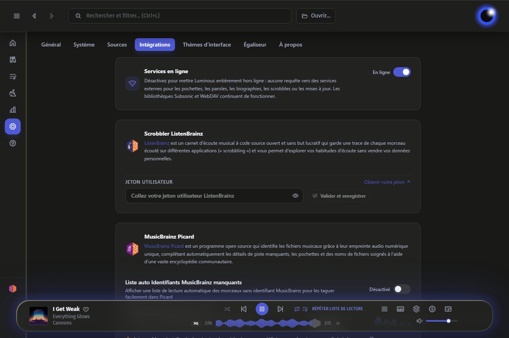
Les bases
Organiser
Renommez et déplacez vos fichiers selon leurs étiquettes. Rien ne change avant que vous cliquiez sur Organiser la musique.
1
Choisissez un modèle : Par défaut, Alternative, ou Personnalisé pour écrire le vôtre. L'arborescence en dessous montre le résultat.
2
Choisissez une destination : le dossier d'origine de la bibliothèque, ou Personnalisé... pour en choisir un autre.
3
Choisissez de déplacer ou non les fichiers connexes, de remplacer les espaces par des tirets bas et de changer les lettres accentuées.
4
Vérifiez l'aperçu. Il ne liste que les fichiers qui vont bouger, avec leur ancien et leur nouvel emplacement.
5
Cliquez sur Organiser la musique.
•
Activez Auto-organiser en haut à droite (ou dans Paramètres → Sources) pour renommer et déplacer automatiquement les nouvelles pistes ou les modifications d'étiquettes en arrière-plan.
•
Nettoyer supprime les chansons manquantes, les dossiers vides et les doublons.
Rendez-vous dans Paramètres → Égaliseur. Chaque changement s'applique aussitôt, même en pleine chanson.
10 bandes
•
Activez Activer l'égaliseur, puis choisissez un préréglage ou tracez votre propre courbe.
•
Faites glisser un curseur pour renforcer ou atténuer sa fréquence, jusqu'à ±20 dB.
•
Baissez le Préampli quand vous renforcez, pour que les passages forts ne saturent pas.
•
Les modes 10 bandes et Paramétrique ont chacun leurs bandes, leur préampli et leur préréglage : passer de l'un à l'autre ne modifie jamais le second.
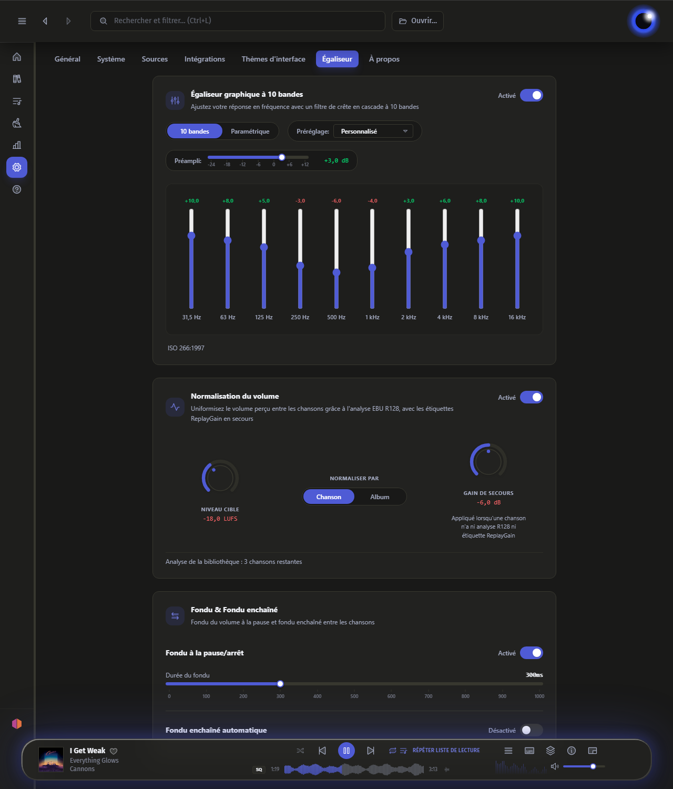
Paramétrique
•
Faites glisser un point pour régler sa fréquence et son gain. Faites défiler dessus pour l'élargir ou le resserrer (Q).
•
Double-cliquez sur le graphique pour ajouter une bande, jusqu'à 20. Le tableau en dessous indique le type, les valeurs et l'interrupteur de chaque bande.
•
Réinitialiser les bandes remet tout à plat.
•
Le menu ⋯ à côté du préréglage regroupe les actions :
– Importer… charge un profil de correction pour votre casque (voir plus bas).
– Exporter… enregistre les bandes et le préampli dans un fichier Equalizer APO.
– Enregistrer sous… garde les bandes actuelles comme préréglage personnel, sous Mes préréglages.
– Renommer et Supprimer gèrent vos préréglages personnels.
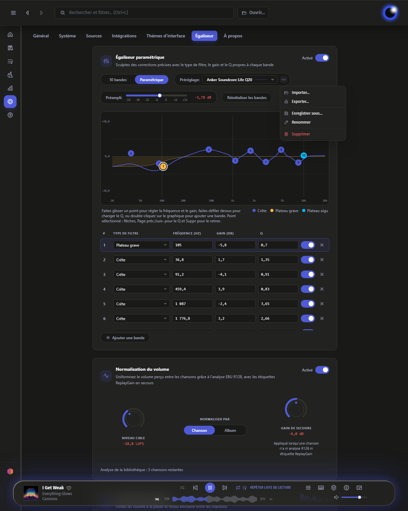
Corriger votre casque
•
Cherchez votre casque sur AutoEq, choisissez EqualizerAPO ParametricEq comme application d'égaliseur et téléchargez le fichier de réglages.
•
En mode Paramétrique, choisissez Importer… dans le menu ⋯, puis Choisir un fichier… ou collez le texte.
•
Le profil est enregistré sous Mes préréglages et appliqué aussitôt. Si Luminous ne peut pas le reproduire exactement, il indique la ligne en cause et ne change rien.
Normalisation du volume
•
Activez-la pour uniformiser le volume d'une chanson à l'autre.
•
Niveau cible règle le volume de lecture.
•
Normaliser parAlbum conserve les écarts de volume entre les chansons d'un même album.
•
Les chansons pas encore analysées utilisent leurs étiquettes ReplayGain, sinon le Gain de secours.
Fondu et fondu enchaîné
•
Fondu à la pause/arrêt baisse le volume progressivement au lieu de le couper.
•
Fondu enchaîné manuel enchaîne les chansons quand vous passez à la suivante; Fondu enchaîné automatique les enchaîne à la fin d'une chanson.
•
Préserver l'enchaînement sans blanc (même album) garde les albums live et concepts sans coupure.
Paramètres
Thèmes d'interface
Choisir un thème
•
Luminous colore toute l'application selon la pochette en cours. Le résultat vous plaît? Enregistrez-le comme thème personnalisé.
•
Système suit votre réglage clair ou sombre. Utilisez les boutons Clair, Sombre et Système de sa carte pour en imposer un.
•
Cliquez sur un thème prédéfini pour l'appliquer.
Thèmes additionnels de soutien (version Microsoft Store seulement)
•
Des thèmes supplémentaires avec leur propre illustration et animation. Cliquez sur le bouton de la carte (Acheter pour…, Obtenir gratuitement ou Obtenir) pour en ajouter un, puis cliquez sur la carte pour l'utiliser.
•
Votre achat n'apparaît pas? Cliquez sur Vérifier les achats.
•
Les thèmes additionnels conservent leurs propres couleurs; elles ne peuvent pas être modifiées.
Créer le vôtre
•
Ouvrez le Créateur de thème personnalisé pour choisir vos propres couleurs.
•
Utilisez Importer un thème pour ajouter un thème à partir d'un fichier. Chaque carte de thème personnalisé peut être modifiée, exportée ou supprimée.
Animations
•
Si votre système réduit les animations, les glissements deviennent de simples fondus.
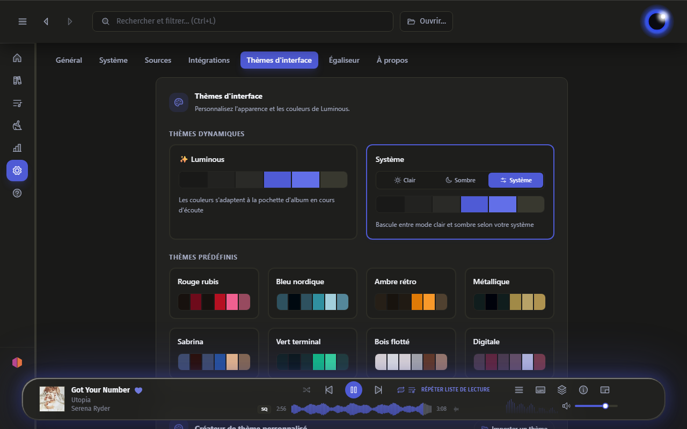
Trucs et astuces
Raccourcis clavier
Lecture
Espace
Jouer / mettre en pause
←
Piste précédente
→
Piste suivante
↑
Augmenter le volume
↓
Baisser le volume
Page préc.
Reculer de 10 s
Page suiv.
Avancer de 10 s
Navigation
CtrlL
Placer le curseur dans la barre de recherche
Échap
Fermer le menu de recherche
CtrlO
Ouvrir la chanson
Ctrl[
Reculer
Ctrl]
Avancer
CtrlA
Tout sélectionner dans la vue de liste actuelle
Disposition et affichage
Ctrl1
Afficher/masquer la barre latérale gauche
Ctrl2
Activer/désactiver le mode immersif
Ctrl3ouCtrlI
Afficher/masquer le panneau d'informations
CtrlM
Afficher/masquer le mini lecteur
Ctrl,
Ouvrir les paramètres
Ctrl/
Afficher cette liste
Les boutons latéraux de la souris et les touches dédiées d'avance/retour du navigateur permettent aussi de naviguer dans l'historique. Les touches multimédias de votre clavier ou appareil contrôlent aussi la lecture.
Paramètres
À propos et crédits
Le code source se trouve sur GitHub, avec les crédits de chaque bibliothèque utilisée par Luminous et la licence sous laquelle il est partagé.
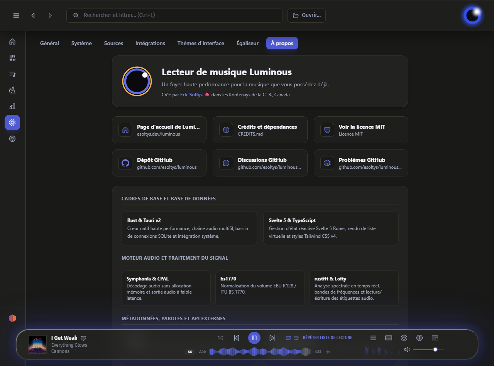
Trucs et astuces
Menus contextuels et sélection multiple
•
Cliquez avec le bouton droit sur une chanson pour Lire, Ajouter à la liste de lecture, Aller à l'artiste, Aller à l'album, Modifier les étiquettes, et plus.
•
Cliquez avec le bouton droit sur un album pour Lire l'album, Ajouter à la file, Modifier les infos de l'album, Ouvrir dans Picard, Partager la carte..., Épingler à l'accueil et Ne pas inclure dans les statistiques.
•
Maj-clic sélectionne une plage, Ctrl-clic ajoute des rangées, et CtrlA sélectionne toute la liste.
•
Quand des chansons sont sélectionnées, une barre d'outils propose Lire la sélection, Ajouter à la liste de lecture et Effacer la sélection.